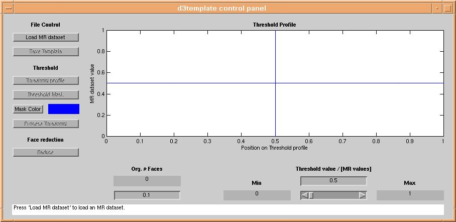
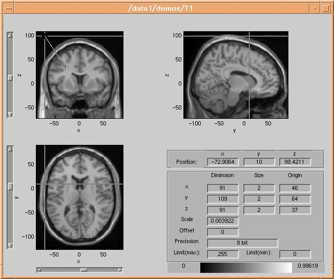
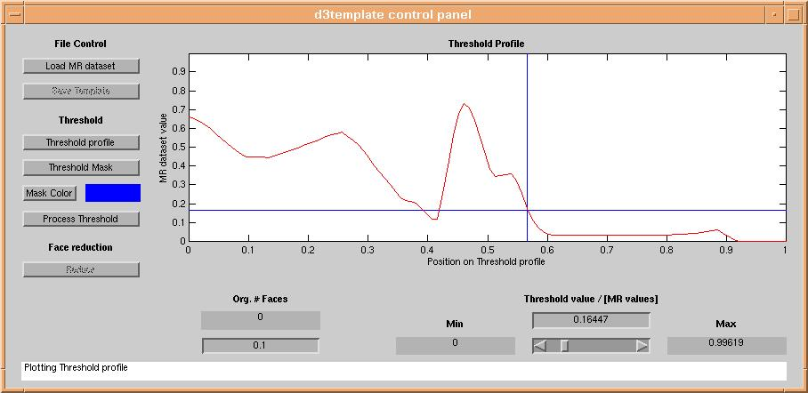
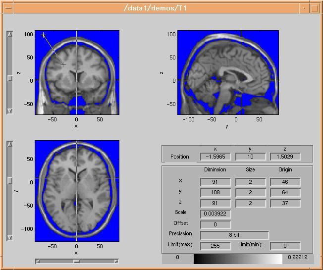
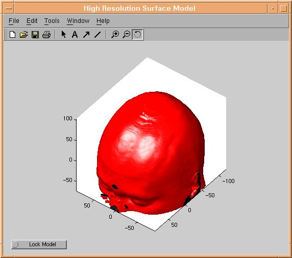
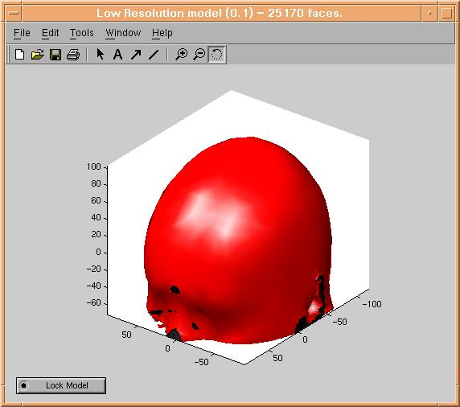

d3template info page
Introduction
d3template is a matlab program, used for creation of MR templates
for use in d3view. An MR template is
created from a standard SPM Analyze dataset containing anatomical data, eg. an
MR dataset or perhaps a CT dataset. d3template creates a set of surface
models of the brain (or skin) surface from the dataset. The surface models are
created using a so called isosurface algorithm, which creates a set of triangles
in volume space, situated at voxels with a unique threshold value. This implies
that the main problem in using d3template is selection of that threshold.
Starting d3template
d3template is started from inside d3view,
or from the matlab prompt. A graphical user interface appars:

Loading data
Pressing the "load" button will present a standard file selection dialog for selection of an Analyze image. After selecting
a fileset, the Analyze image will appear in the
Threshold selection
The next step in creation of the isosurfaces i selection of the threshold. A wanted
threshold can be selected by changing the threshold slider, inputting a value
in the treshold value box, or by clicking the "Threshold Profile" graph. The "Threshold
Profile" graph is created by clicking the "Threshold profile" button of d3template.
The user is then asked to select two points within the �volume
browser. The two points should be situated on each side of the surface one
wants to model, in this case the skin surface. The volume
browser draws a line between the two selected points:

The dataset is then sampled along the line between the two points, and the data values along the line are plotted in
the "Threshold Profile" graph:

A reasonable threshold is then selected by clicking on the "Threshold Profile"
graph at aproximately the mid-value of the surface one wants to model (in this
case the skin surface). To check if the selected threshold is reasonable, click
the "Threshold Mask" button and data with value lower than the threshold will
be masked out in the volume browser :

In this case the mask color is blue - a different color is selected using the
color selector, by clicking the "Mask color" button.
Creating a high resolution model
When the result of applying the threshold mask looks reasonable, we can start creating a surface model. This is done by clicking the
"Process Threshold" button. This will start the external isosurface routine created by Jesper James Jensen of IMM, DTU. Since isosurfacing
is not a simple mathematical problem, now would be a good time to have a break :-). After maximum 10 minutes (the time used
depends strongly of dataset resolution) a surface model should appear:

Reduction models
Once the high resolution model look appealing, press the "lock model" of the high
resolution model. Will will now start reducing the model for minimizing later
calculation time in d3view. Select a
reduction factor 0 < f < 1 in the box below "Org. # Faces". The
reduced model will then have approximately f times lower number of triangles
than the high resolution model. Now press the "Reduce Model" button. After up
to 2 times the time you waited before, a reduced model should appear:

Create as many reduced models as wanted, and lock the ones you would like to save for later use, by pressing their "lock model" buttons.
Saving a template
When you are done creating models, simply press the "Save Template" button of
d3template, and select a filename. You have now created a new MR template
for use in d3view.
End of d3template info page.